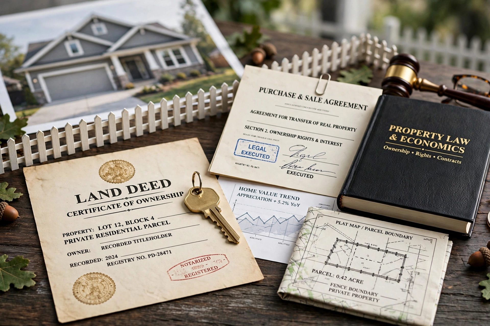

Property rights are the theoretical and legal ownership of resources and how they can be used. Such resources may be tangible or intangible and are owned by individuals, businesses, or governments. Property is often described as a "bundle of rights" including the rights to use, exclude others, earn income from, and transfer the resource.
John Locke argued labour mixing grounds natural ownership; utilitarian and economic accounts, including Ronald Coase's analysis of externalities, stress that clear, enforceable rights shape incentives and bargaining. Elinor Ostrom showed that communities can govern common-pool resources without pure private or state ownership. Property regimes are commonly classed as private, common, collective and state property.
Law distinguishes real property (land and fixtures) from personal property, and protects ownership through torts such as trespass and conversion and, in constitutional systems, against uncompensated takings — e.g. the Fifth Amendment to the U.S. Constitution. Intellectual property extends analogous rights to inventions, works and marks. Critics from Proudhon ("property is theft") to modern distributive-justice theorists contest the scope and fairness of holdings.